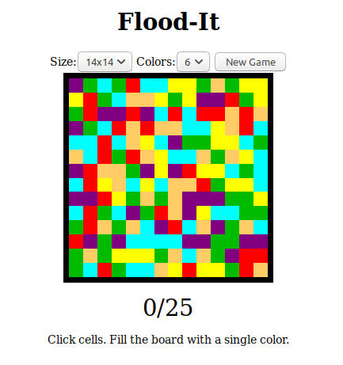

Almost everyone has heard of this popular game as an app on iPhone and Android, but not many people know it's also available on the web! The aim of the game is to match
pairs of numbers and combine them until you reach the exciting 2048 tile.
You can play this game for yourself by clicking on this link.
Flood-It

Flood-It
This game is less well-known, but still an exciting puzzle experience! The idea is to choose colours and gradually fill in the board, until you've managed to fill it all
with one colour. With many different sizes to try, you'll never get bored!
You can play this game for yourself by clicking on this link.